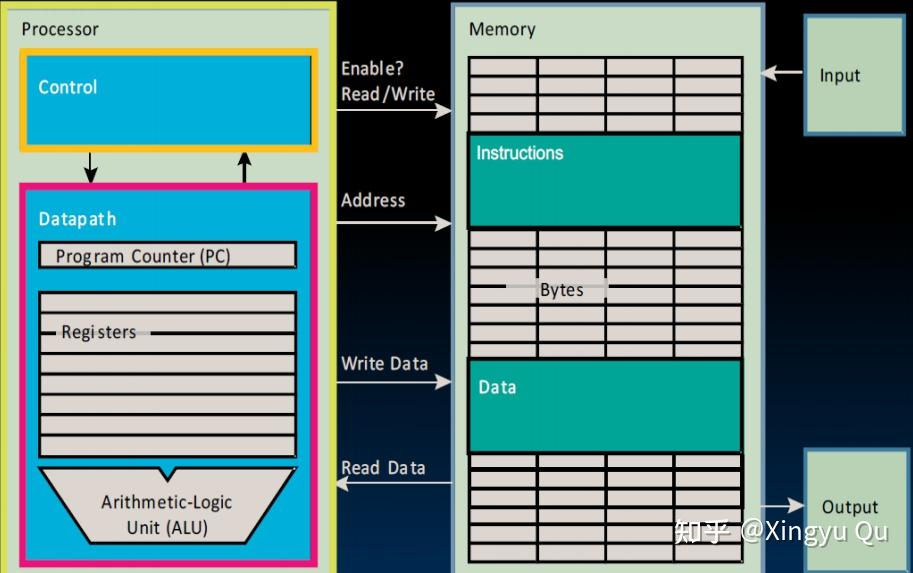
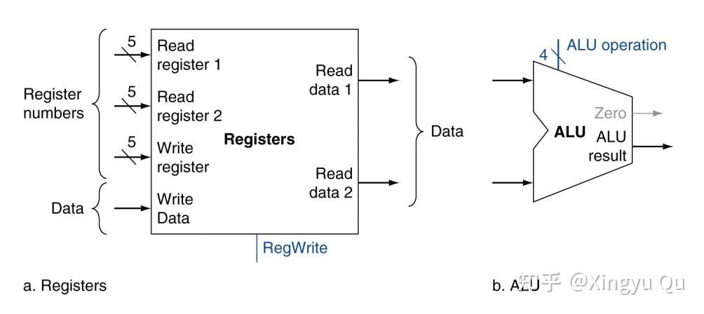
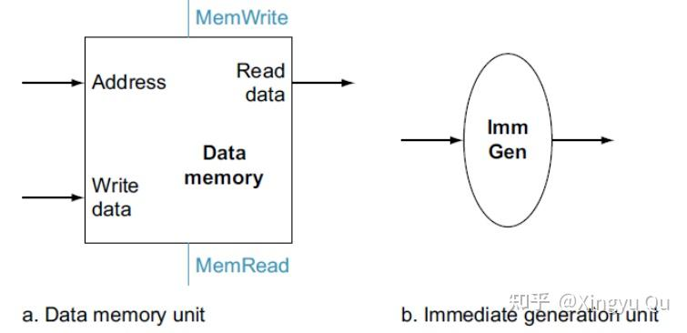
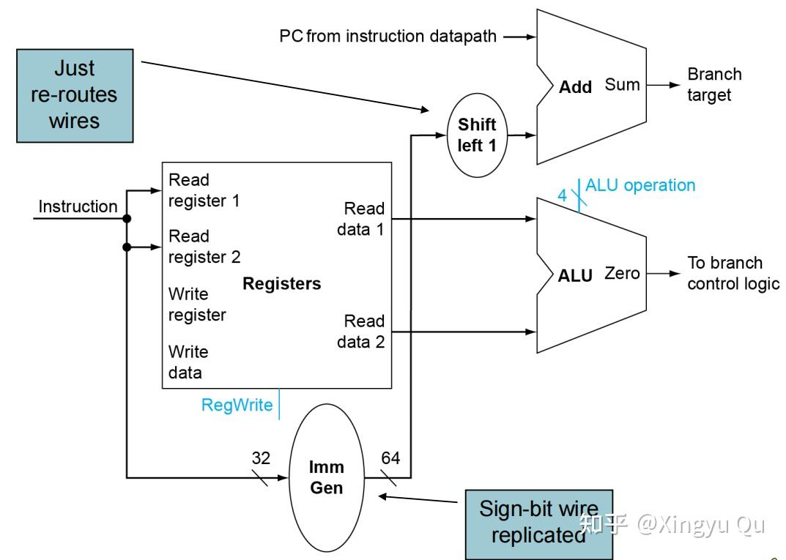
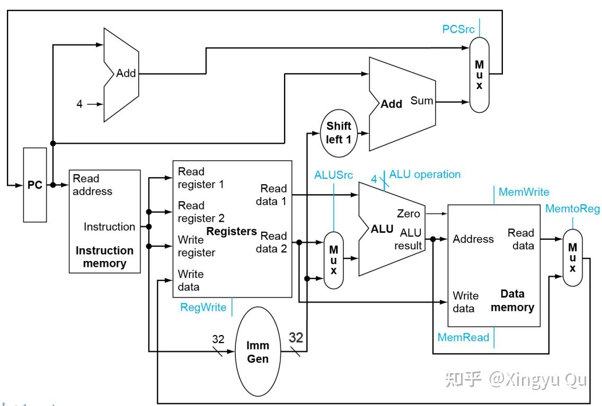

概述
在完成算术部件后，本讲进入处理器设计，首先构建单周期数据通路。
本讲将分别考虑R型指令，load/store指令，分支指令在硬件层面上的实现。
（一）认识处理器
1.CPU's view

如图所示，在CPU中，处理器主要的任务是读->处理->写数据，完成与内存的交互。
另外需要强调的是，Memory采用的是哈佛架构，将指令和数据的存储分开。
2.处理器的构成
可以将处理器抽象成Datapath（数据通路）和Control（控制通路）：
->Datapath：执行操作
->Control：控制Datapath进行操作
3.处理器执行一条指令的过程
（1）从寄存器取指令
（2）读寄存器并译码指令
（3）执行操作并计算地址
（4）访问寄存器中的操作数（if）
（5）结果写回寄存器（if）
（二）指令的执行步骤和硬件实现
在执行指令之前需要取出指令，处理器会执行：
在IM（Instruction Memory）中取IM[PC]（在周期的上升沿执行）
PC<- PC+4 （在周期的下降沿执行）
这部分我们对三种指令（R型、load/store、beq）的执行过程进行分析，并说明其硬件实现。
1.R型
add x5, x6, x7
读RF->计算（ALU）->写（ALU）
需要硬件：ALU

2.load/store指令
load: lw x5, 3(x6)
（1）读RF（x6中的地址）
（2）通过ImmGen（立即数产生器）将立即数扩展到32位（原本是最多12位的立即数），计算地址
（3）读DM（Data Memory）
（4）写RF（x5）
store：sw x5, 3(x6)
（1）读RF
（2）通过ImmGen（立即数产生器）将立即数扩展到32位（原本是最多12位的立即数），计算地址
（3）写DM
需要硬件：ImmGen，ALU

在这张图中，有两个控制信号（Memread, MemWrite），而上一张图中RF只有一个Write的信号，这是因为两种存储的硬件层面设计不同，读取无效地址上的数据可能会导致问题。
3.分支指令
beq x5, x6, .L1
（1）读RF
（2）计算（ALU-sub+zero output check）
（3）计算目标地址（符号扩展->左移一位） target
（4）根据（2）中的结果决定PC <- target 或者 PC <- PC+4
需要硬件：ImmGen，adder，ALU，shifter（移位器）
add和shift的操作不能在ALU中操作，因为会破坏ALU的结果（ALU是组合逻辑单元，不具有存储功能）

（三）完整的数据通路
将以上几种指令格式的硬件合并，可以构建出完整的数据通路图。

其中有很多没有涉及到的控制信号，本讲将在下节课一起学习Control（控制通路）